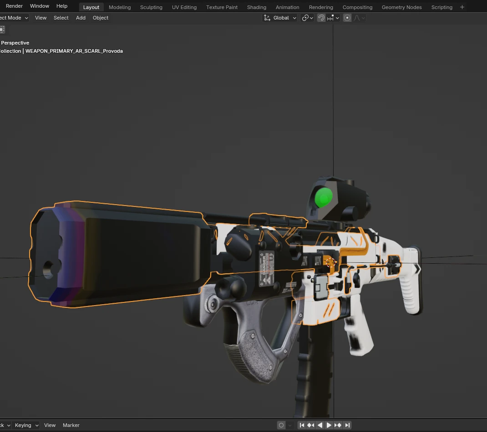
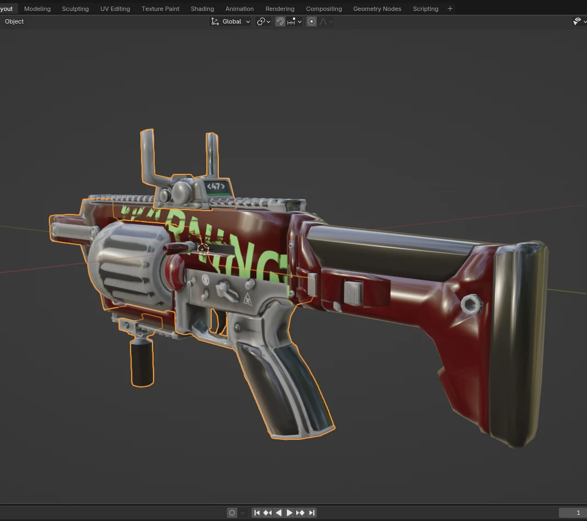
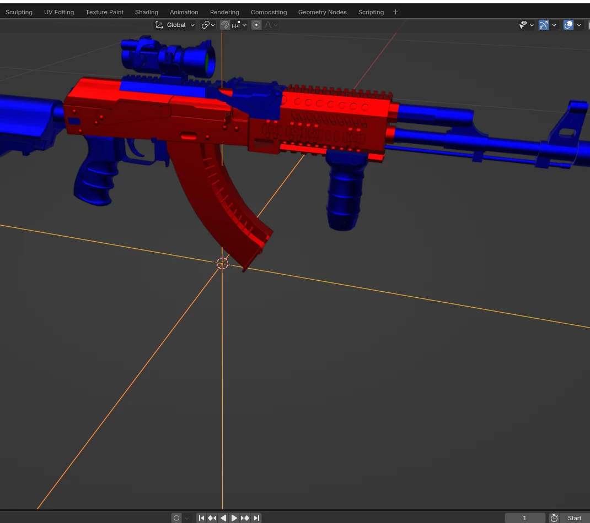
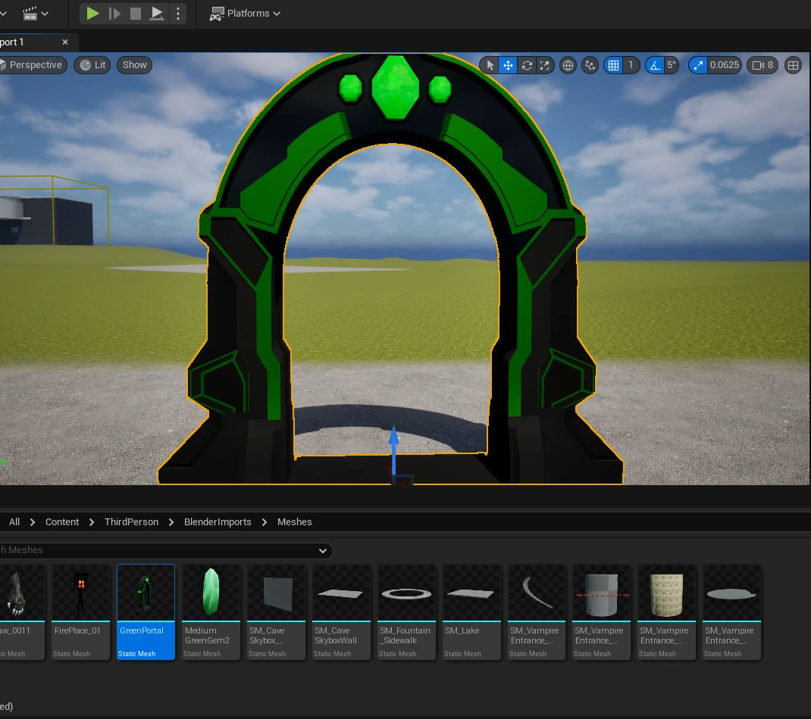
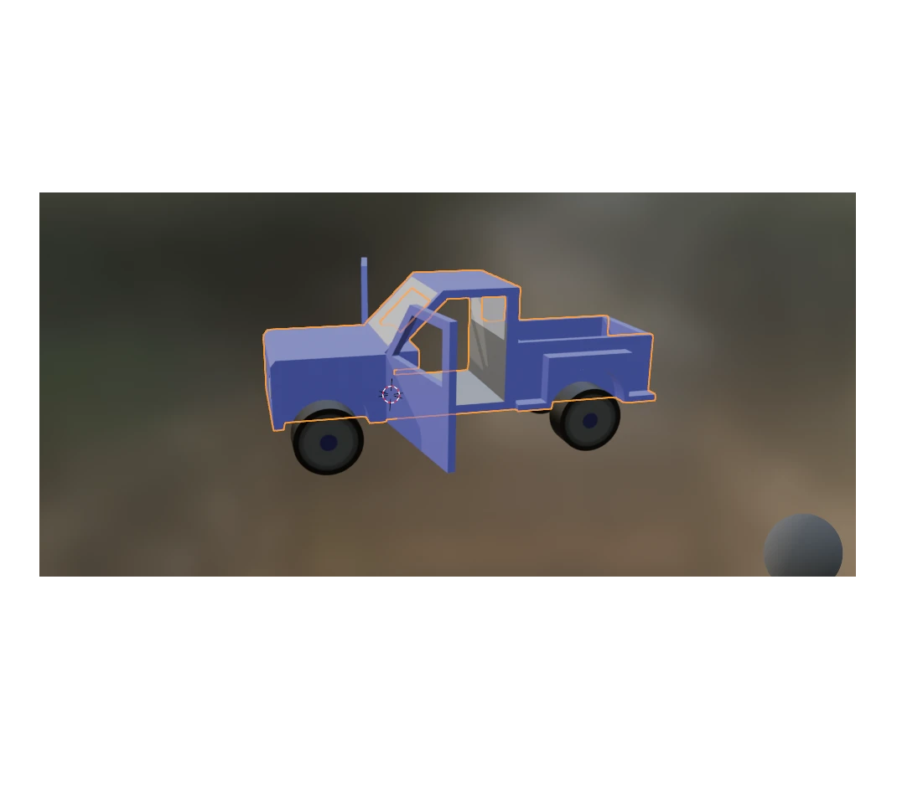
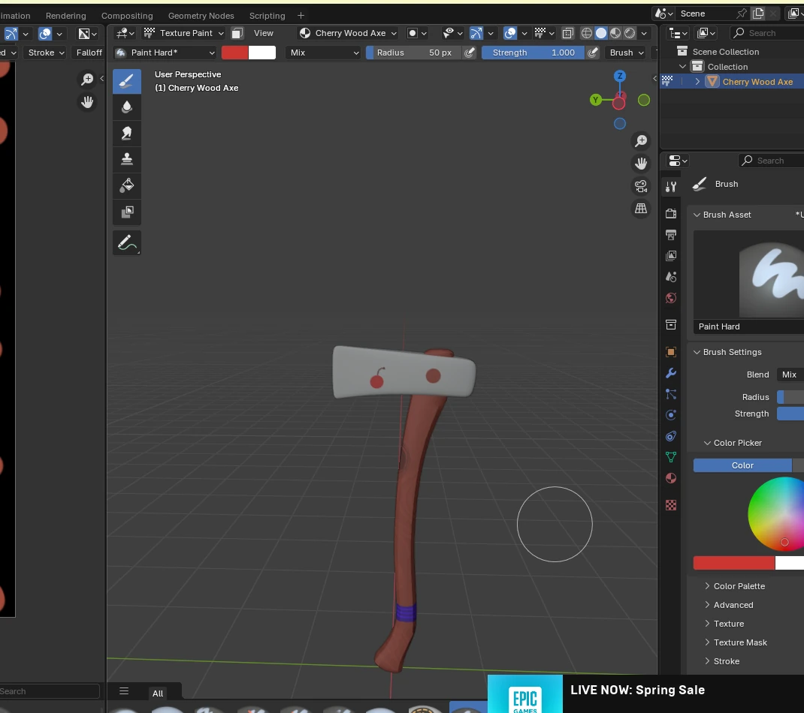
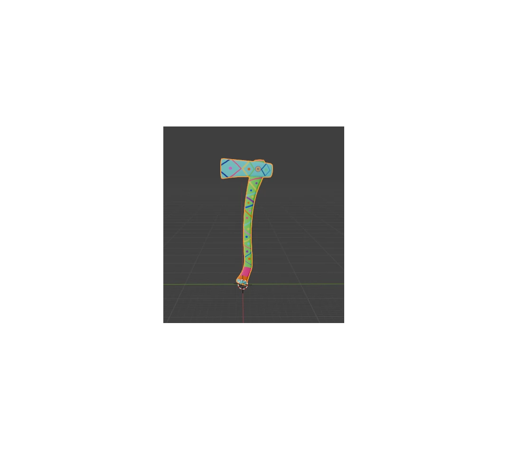
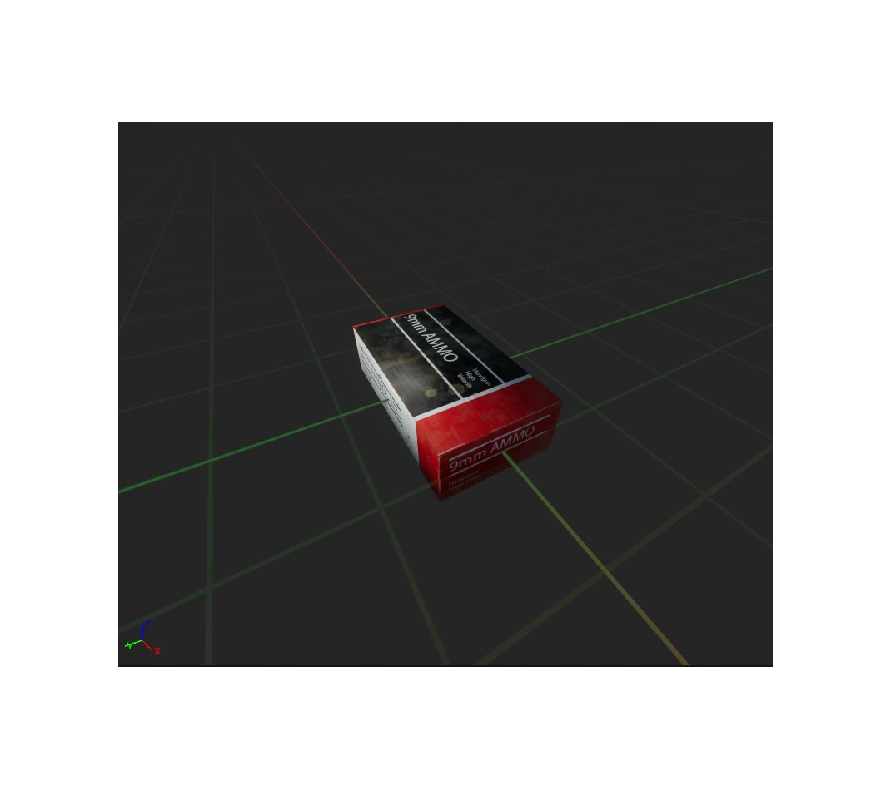
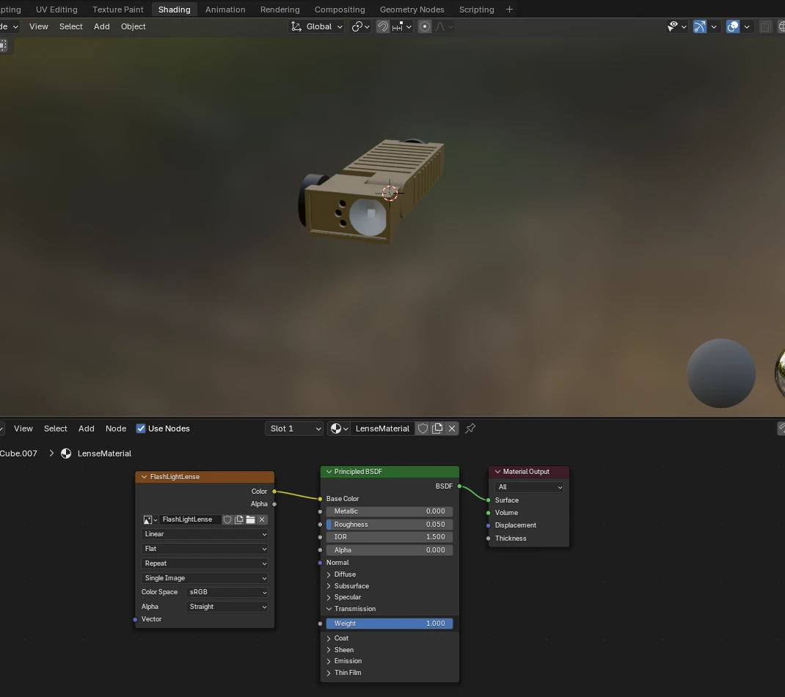

Advanced Scar
This is one of my Blender projects that was used in production of one of my Unity projects called Celestial Siege: Captains Gambit. I made this rifle over the course of 1 week to implement the rifle into the Boss battle.

Shotgun
This Blender projects was used in production of one of my Unity projects called Celestial Siege: Captains Gambit. I made this shotgun and implemented it in the second level.

AK47
This Blender projects was used in production of one of my Unity projects called Celestial Siege: Captains Gambit. I made this Ak and implemented it in the second level I also ensured that the scope glass was removed to allow for a unique reticle.

Green Portal
This Blender projects was used in production of one of my Unreal Engine projects called Beastslayer: Origins. This is one of the portals that take the player into a different world.

Timber Quest Truck
This Blender projects was used in production of one of my Roblox Studio projects called Timber Quest. I made this truck with doors and a tailgate that open and close for hauling lumber in the game.

Cherry Axe
This Blender projects was used in production of one of my Roblox Studio projects called Timber Quest. I made a few different axes based off of the one model.


Ammo Box
This Blender projects was used in production of one of my Unreal Engine projects called Specter Virus. I made a few different boxes of ammo based off of the one model and changed the texture using Gimp.


Ammo Box
This Blender projects was used in production of one of my Unreal Engine projects called Specter Virus. I made this light as a tactical shoulder light for the player.

VSF Rifle
This Blender projects was used in production of one of my Unreal Engine projects called Vanguard Strike Force.